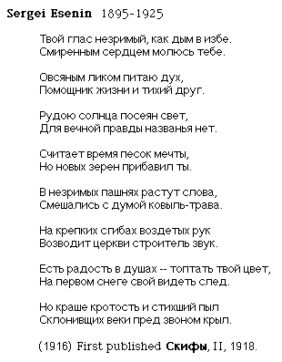

Page index / gl
Notes 74
Zarathustra Steiner differentiates between the historical figure, and the pre-historical Zarathustra who prepares the Persians for the future re-unification of mankind with the spiritual world. (Occult Science, 236-237).
The excerpts from the Yesenin poem return us to Section 6.

Alsace . . . a cannon yelped. Bely spent the first years of World War I in Dornach, Switzerland, where he worked on the construction of the Goetheanum. In 1916 he returns to Russia.
Tsarskoe Selo. The present day town of Pushkino, just outside of St. Petersburg, Russia, where Bely was frequently a guest at the home of Ivanov-Razumnik.